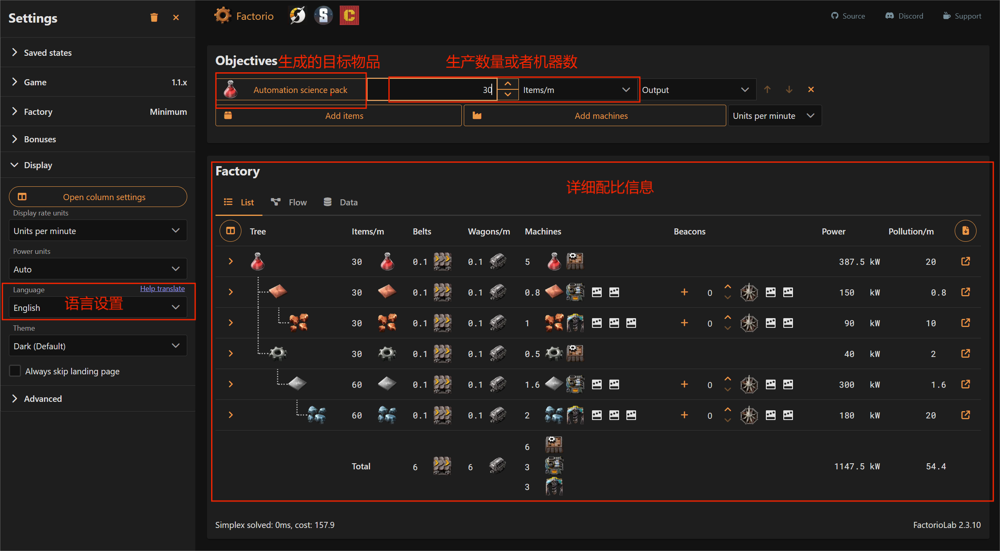
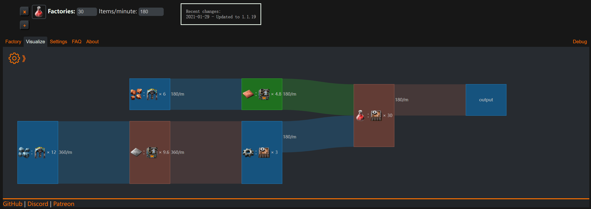

本项目仍在编辑中，也欢迎任何人从github参与，进行pull request(PR)的提交(如何提交PR？)，对git/github不熟悉的，可以通过邮件联系我们。
这里是Factorio入门指南，旨在为新手提供对Factorio基本的认识和成为答疑解惑的工具书，以便快速入门。 我们的目标是读者可以通过本指南学习如何建立30瓶科技瓶每分钟左右的总线工厂，至于百瓶甚至千瓶工厂的黑盒工厂，属于进阶内容，并不在本入门指南的范围内。
开局
基本按键操作
科技
生产
factorio 量化工厂计算器
| 计算器 | 描述 | 屏幕截图 |
|---|---|---|
| factoriolab | 推荐 |  |
| kirkmcdonald's Calculator | 很久没更新，最近的版本是1.1.19 |  |
Factoriolab
比较推荐的计算器是 factoriolab，支持中文，功能也比较全面。
电力
热能
太阳能
核能
Chapter 3 物流运输
传送带物流
均分器(Balancer)
火车及铁路信号灯
机器人物流网络
进阶内容
防御虫巢
信号网络
开服指南
和好朋友一起冒险才好玩!—— 努努与威朗普
Windows
Linux & WSL
从官方下载专用服务器（Headless server），请注意选择和游戏客户端对应的版本。
贡献者
以下是帮助改进本指南的贡献者列表。 向他们欢呼！
如果您觉得自己不在此列表中，请随时将自己添加到仓库中。